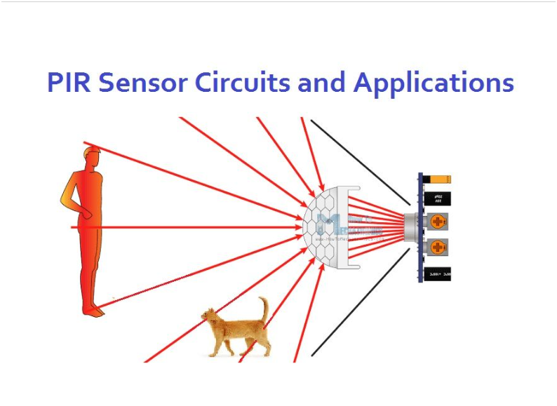
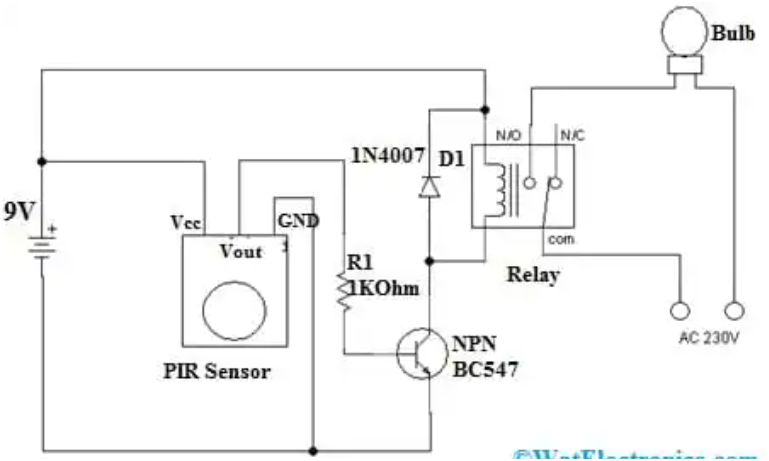

PIR Motion Sensor
 Detects infrared light emitted by moving objects.
Key Information
- Type: Passive Infrared (PIR) Sensor
- Operating Voltage: 5V to 20V DC
- Detection Angle: Typically 120 degrees
- Detection Distance: Adjustable, usually 3 to 7 meters (10 to 23 feet)
- Output: Digital (HIGH when motion detected, LOW otherwise)
- Delay Time: Adjustable from 0.3s to 200s (or more)
- Trigger Method: L (non-repeatable trigger) / H (repeatable trigger)
About the PIR Sensor
A PIR (Passive Infrared) sensor is an electronic sensor that measures infrared (IR) light radiating from objects in its field of view. It does not emit any energy itself, making it "passive." It's commonly used to detect human or animal movement.
The sensor consists of a pyroelectric sensor which detects levels of infrared radiation. When a warm body (like a person) passes by, it causes a change in the IR radiation, which the sensor detects. The sensor typically has two potentiometers for adjusting sensitivity and delay time, which controls how long the output remains HIGH after motion is detected.
PIR sensors are widely used in motion-activated lights, security alarm systems, automatic doors, and various home automation projects to detect presence.